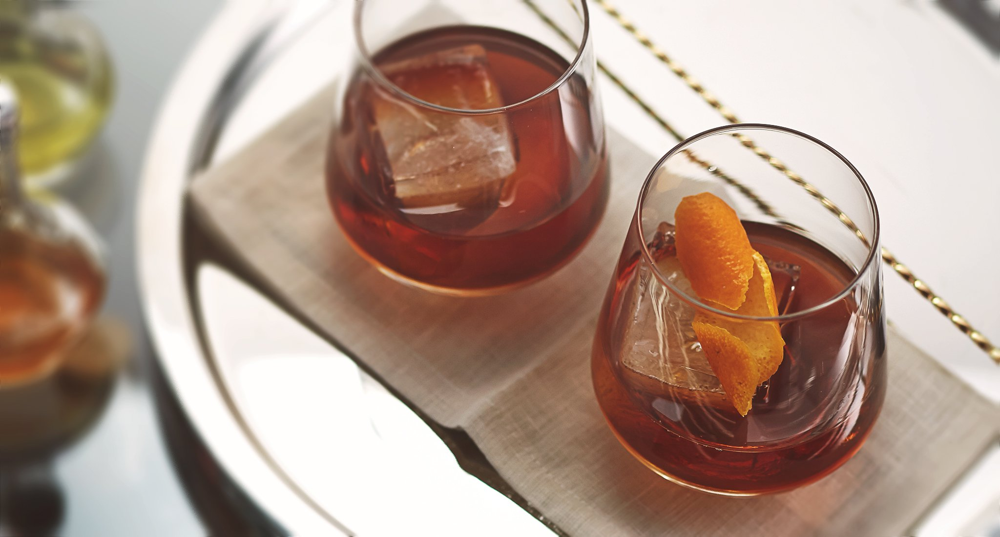

Bulleit Old Fashioned

Some people say that the Old Fashioned is one of the first cocktails ever created.
It is light, refreshing tasting, yet complex combination of Bulleit Bourbon,
sugar and bitters
1.25 OZ Bulleit Bourbon
2 bar spoons Simple Syrup
3 dashes Angostura bitters
1 orange peel
Rocks glass
1 jigger
Ice
Knife
Bar spoon
How to Make:
Add two bar spoons of simple syrup, three dashes of bitters and
Bulleit Bourbon to a large rocks glass.
Add ice
Stir gently until the level of the ice and liquid equalize.
Zest an orange peel over hte glass then add the peel to the drink as garnish.
Return to Top